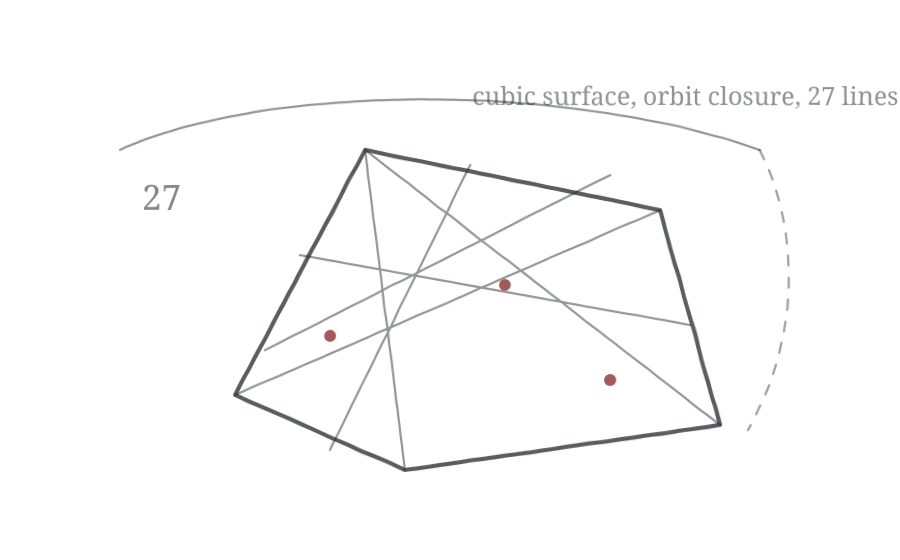

A universal formula for counting cubic surfaces

Table of Contents
- Section 1: Introduction
- Section 2: Preliminaries
- Section 3: Test families
- Section 4: The equivariant orbit class
- Section 5: Addressing the orbit closure problem
- Bibliography
Tags
| Tag | Type | Number |
|---|---|---|
| FB17 | Theorem | 1.1 |
| 7159 | Theorem | 1.2 |
| 19D6 | Corollary | 1.3 |
| CBCA | Corollary | 1.4 |
| E187 | Proposition | 2.1 |
| 5849 | Proof | |
| 2E34 | Theorem | 2.2 |
| 6232 | Theorem | 2.3 |
| 5026 | Definition | 2.4 |
| 6A03 | Example | 2.5 |
| 2D33 | Example | 2.6 |
| E6E6 | Example | 2.7 |
| E2B1 | Proposition | 2.8 |
| 0C55 | Proof | |
| 1725 | Definition | 2.9 |
| 63B3 | Proposition | 2.10 |
| AE73 | Proof | |
| E785 | Definition | 2.11 |
| EFEE | Proposition | 2.12 |
| 76CC | Proof | |
| 96E0 | Proposition | 2.13 |
| 9CDC | Proof | |
| B6DB | Proposition | 3.1 |
| 533B | Proof | |
| 01D2 | Proposition | 3.2 |
| 8459 | Proof | |
| 0D52 | Proposition | 3.3 |
| B021 | Proof | |
| F787 | Proposition | 3.4 |
| 6892 | Proof | |
| F5F3 | Proposition | 3.5 |
| 6D50 | Proof | |
| B343 | Proposition | 3.6 |
| 38DB | Lemma | 3.7 |
| 66A6 | Proof | |
| 2477 | Proof of Proposition 3.6 [B343] | |
| 6556 | Proposition | 3.8 |
| A625 | Proof | |
| E755 | Proposition | 3.9 |
| 5A99 | Proof | |
| DE47 | Proposition | 3.10 |
| 736D | Proof | |
| 2D39 | Proposition | 3.11 |
| CC47 | Proof | |
| 3751 | Lemma | 3.12 |
| 8B66 | Proof | |
| 445B | Proposition | 3.13 |
| 8A68 | Proof | |
| 1DCC | Proposition | 3.14 |
| 0CAF | Proof | |
| 5A8D | Proposition | 3.15 |
| F675 | Proof | |
| 3C02 | Proposition | 3.16 |
| 2F9A | Proof | |
| 88CA | Proposition | 3.17 |
| 53DE | Proof | |
| 9140 | Proposition | 3.18 |
| BB86 | Proof | |
| C5DB | Proposition | 3.19 |
| 7D68 | Proof | |
| A966 | Proposition | 3.20 |
| 9372 | Proof | |
| 80DD | Proposition | 3.21 |
| 635C | Proof | |
| 8262 | Proposition | 3.22 |
| B320 | Proof | |
| 7AF7 | Theorem | 4.1 |
| 2694 | Proof | |
| A010 | Corollary | 4.2 |
| 9273 | Proof | |
| 2454 | Corollary | 4.3 |
| 1288 | Proof | |
| D247 | Proposition | 5.1 |
| 922B | Lemma | 5.2 |
| 802E | Proof | |
| 2B10 | Proof of Proposition 5.1 [D247] | |
| 2104 | Proposition | 5.3 |
| 963C | Proof | |
| 87F4 | Proposition | 5.4 |
| 1C52 | Proof | |
| E774 | Proposition | 5.5 |
| 8A09 | Proof | |
| 9D0D | Proposition | 5.6 |
| F600 | Proof | |
| B6FF | Remark | 5.7 |
| F9CA | Proposition | 5.8 |
| C5F5 | Proof |